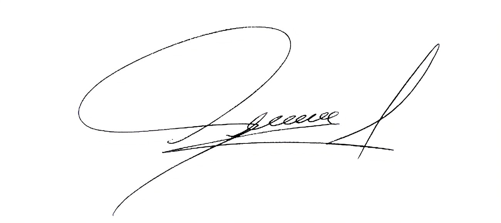

5 de enero de 2025
Carlos Figueroa
Jefe de Area
Industrias Selem
Av. Boyacá #23-2, Bogotá
+57 321 123 5678
Al Sr. Figueroa
le solicito amablemente acepte mi renuncia formal como miembro de Industrias selem. Mi ultimo dia laboral sera el 19 de enero de 2025, dentro de dos semanas a partir de hoy:
Estoy extremadamente agradecido por las oportunidades que se me han brindado en este puesto. Valoro los conocimientos que he aprendido y espero contar con ellos en mis futuras tareas. tambien dia me gustaria agradecerles por apoyar mi crecimiento profecional. he disfrutado mi tiempo de trabajo en la empresa con ustedes y con el resto del equipo.
Quedo a disposicion para ayudar a que la transicion de responsablididades sea lo mas ordenada posible para todos los involucrados. gracias
Saludos Cordiales,
Hernán Álvarez